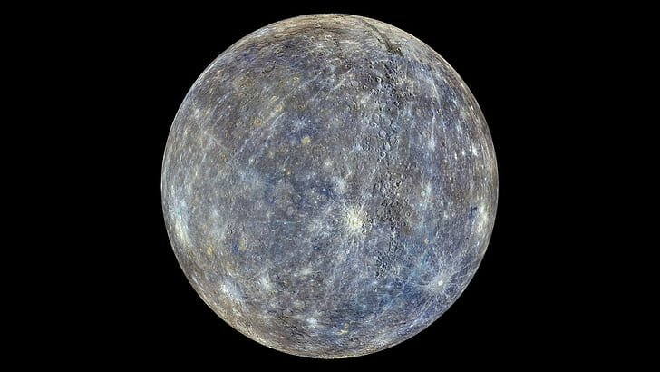

Mercury is the innermost planet in the solar system and the smallest of the eight planets, with a diameter of just 4,879 kilometers. With no atmosphere to retain heat, Mercury endures the most dramatic temperature fluctuations of any planet, from -180°C at night to over 430°C during the day.
It has a heavily cratered, rocky surface resembling Earth's Moon, due to constant bombardment by meteoroids over billions of years. Despite being close to the Sun, Mercury is not the hottest planet—Venus holds that title thanks to its thick atmosphere.
A day on Mercury (sunrise to sunrise) lasts 176 Earth days. However, it only takes 88 Earth days to complete one orbit around the Sun, making its year half as long as its day.
Mercury has a massive iron core that makes up about 85% of its radius, surrounded by a silicate mantle. Scientists believe the planet once had a thicker outer shell, much of which may have been stripped away in a massive collision.
Named after the Roman god Mercury—the swift-footed messenger of the gods—the planet's speed around the Sun inspired its name. It has no moons or rings, and its thin exosphere contains trace amounts of hydrogen, helium, oxygen, sodium, and potassium.
Mercury has been visited by spacecraft such as Mariner 10 in the 1970s and MESSENGER (2004–2015), which mapped the entire surface and provided detailed data about its composition and magnetic field. The BepiColombo mission, launched by ESA and JAXA, is currently en route and expected to arrive in 2025.
| Feature | Details |
|---|---|
| Diameter | 4,879 km (3,032 miles) |
| Distance from Sun | 57.9 million km (36 million miles) |
| Orbital Period | 88 Earth days |
| Rotation Period | 59 Earth days |
| Length of Solar Day | 176 Earth days |
| Temperature Range | -180°C to 430°C |
| Atmosphere | Exosphere (oxygen, sodium, hydrogen, helium, potassium) |
| Moons | 0 |
| Rings | None |
| Magnetic Field | Yes (1% of Earth's strength) |
| First Spacecraft Visit | Mariner 10 (1974) |
| Most Recent Mission | MESSENGER (2004-2015) |